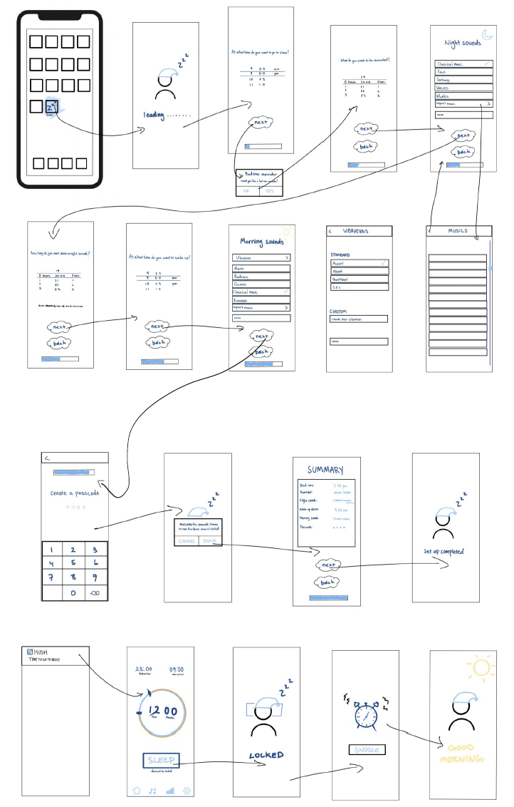
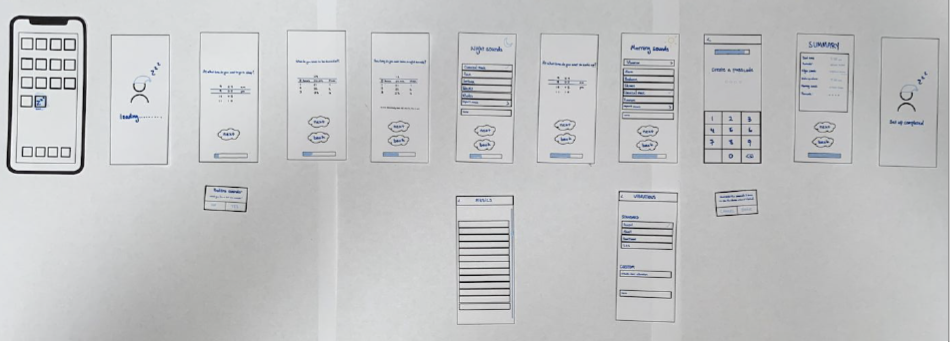
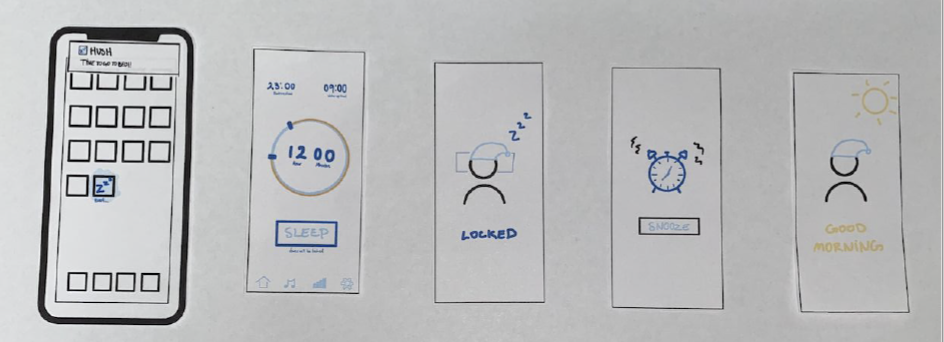
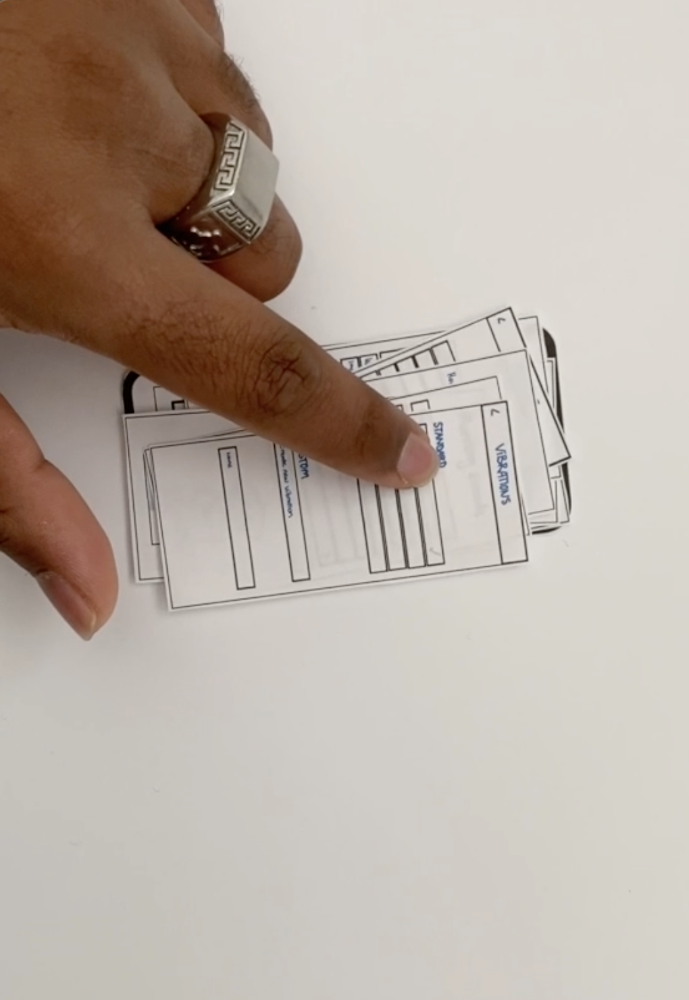
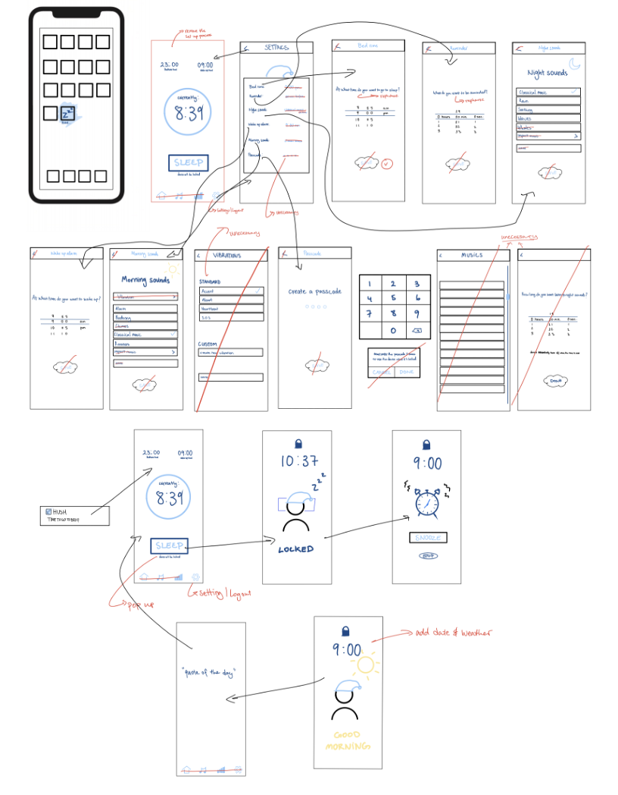
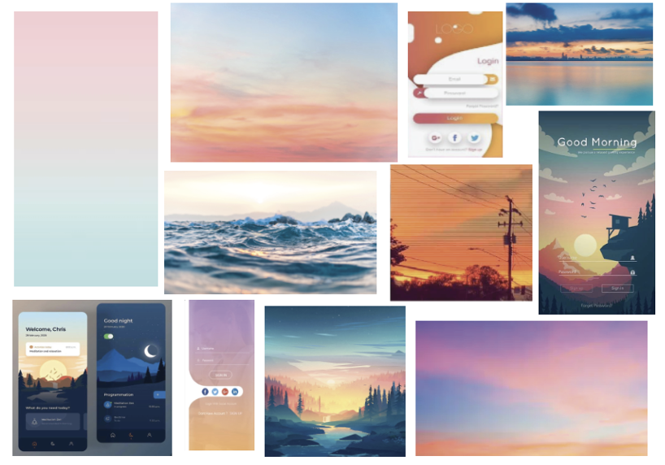
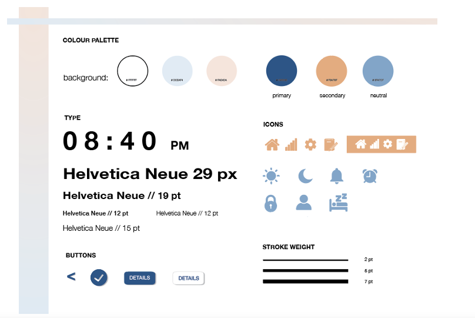
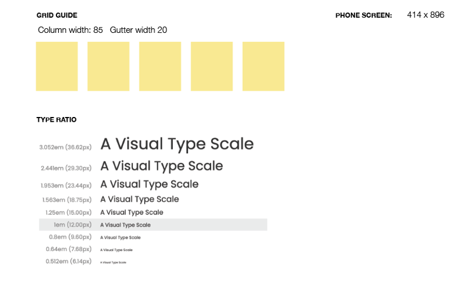
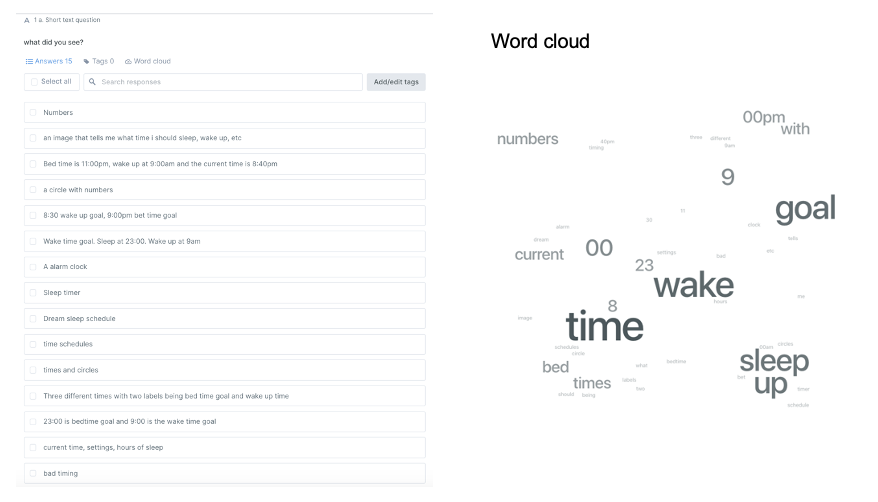
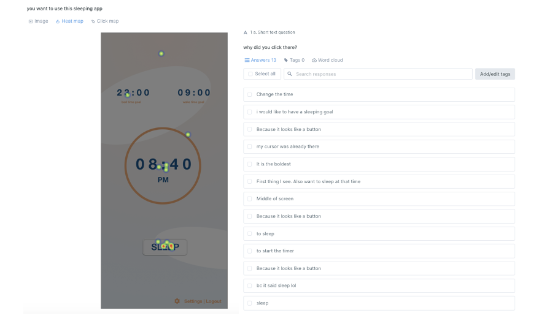

Hush
User Experience Design
The task is to fix an individual's sleeping schedule by ensuring that they get the required 8
hours of sleep. Everyone always gets distracted by their phone during the night. Therefore
the product will lock the user out of your phone until the next morning. To do this they must
set up the provided details. When the phone is locked, they won't be notified by their
notifications and is required to enter their passcode 5 times to unlock it or just the phone the
next morning. There is also a section where you can track the sleeping progress.
User Research
What goals do you have in mind when you carry out the task?
The user's goal is to improve the quality of sleep without any distractions, which is provided by the lock function.
What are your typical feelings during the task and does this influence your ability to complete the task?
The user would be feeling tired and frustrated that they are having difficulty to sleep because of the phone distraction.
What are you typically thinking about while you carry out the task?
The user would be thinking about how to stop going on their phone and hoping that they are
able to improve their sleep.
What context is the task typically taking place in?
The task is mainly taking place at home in the user bedroom. The timeframe would be before their set bedtime. The suggested artifacts would be the phone/mobile deceive.
Wireflow

Paper Prototype


Test Scenario
Your sleeping pattern is terrible, you would sleep and wake up at different times each day. You want to go to sleep early but you keep getting distracted by your phone. Therefore you are going to try minimising distractions and phone usage by using the app Hush. It will track and fix your sleep routine but you must set it up to your liking. Then you are able to press sleep and your phone will be locked.

Prototype Refinement
Before testing the prototype was very messy and didn't portray my task nicely. The setup steps were unnecessary so removed it and added a setting section where you can set up the requirements. I added the weather and a quote to make it more welcoming in the morning. I changed the questions into statements where it's telling the user to do something.

Moodboard

Style Tile

Grid and Type Ratio

5 Second Test
Result: 15 people completed the test and it shows that my UI was clear and readable through the word counts. Hence I can improve by making the UI more aesthetically pleasing.

1st Click Test
Result: 13 people completed this test. I asked the user where they will click if there were using the sleeping app. The majority of the user tap on the sleep button saying because it looks like a button or they want to sleep. This shows the user negative through the app easily. However, a few of the user tap in the circle because it is in the middle of the screen. Therefore, I can improve by making the UI more cohesive and demonstrate a clearer hierarchy

Axure Cloud Link: https://hilood.axshare.com